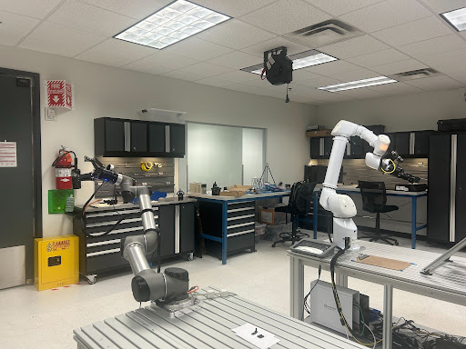
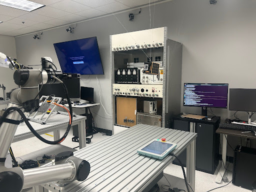
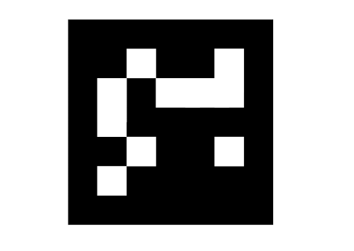
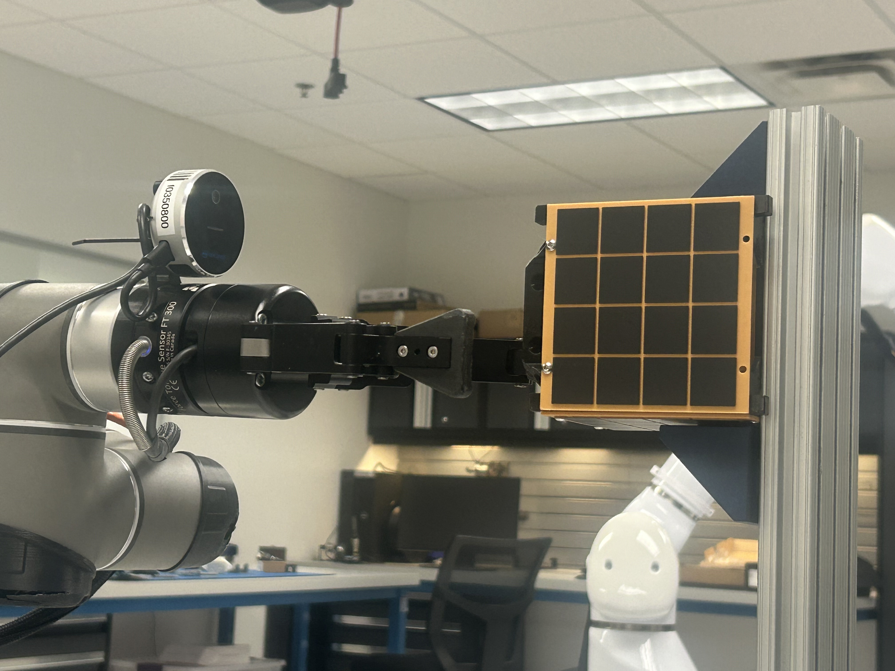

At Redwire Space, I developed an autonomous robotic grasping system for CubeSat manipulation using a UR5 robotic arm. The project focused on creating a complete ROS-based pipeline that could detect, track, and grasp a CubeSat model using visual servoing and motion planning techniques. This work directly supports future on-orbit satellite servicing and assembly missions where precise autonomous manipulation is critical.
Laboratory Setup

Redwire Space robotics laboratory with UR5 manipulator systems

Complete workspace setup with control station and safety barriers
System Architecture
The system integrated multiple components to achieve reliable autonomous grasping:
1. Perception System - Intel RealSense L515
The Intel RealSense L515 LiDAR camera served as the primary sensor, providing both RGB imagery and high-precision depth data. The camera's LiDAR technology enabled accurate 3D perception even in challenging lighting conditions, making it ideal for space-like environments where consistent lighting cannot be guaranteed.
2. Fiducial Tracking - ArUco Markers
ArUco markers were strategically placed on the CubeSat model to provide robust pose estimation. These computer vision markers allowed the system to:

ArUco fiducial marker used for CubeSat pose estimation
Accurately determine the CubeSat's 6-DOF pose (position and orientation)
Track the target in real-time with sub-millimeter precision
Maintain tracking even during partial occlusions
Provide consistent reference frames for motion planning
3. Motion Planning - MoveIt & UR5
The Universal Robots UR5 arm executed the grasping maneuvers using MoveIt for motion planning. The system leveraged collision-aware planning to ensure safe trajectories while optimizing for smooth, efficient motion paths.

Realsense L515 and the Cubesat
ROS Pipeline Development
I built a comprehensive ROS-based pipeline that seamlessly integrated vision, planning, and control:
Vision Pipeline
Point Cloud Acquisition: Captured and processed point clouds from the RealSense L515 for 3D scene understanding
ArUco Detection: Implemented real-time marker detection and pose estimation using OpenCV
Pose Filtering: Applied temporal filtering to smooth noisy pose estimates
Transform Broadcasting: Published detected poses to the ROS TF tree for unified coordinate frame management
Planning Pipeline
URDF/SRDF Configuration: Developed robot description files defining the UR5's kinematic structure and planning groups
MoveIt Integration: Configured motion planners (OMPL) with appropriate planning algorithms for the workspace
Collision Checking: Set up collision primitives to prevent contact with the environment and CubeSat during approach
Grasp Planning: Implemented grasp pose computation based on detected CubeSat orientation
Control Pipeline
Real-time Control: Integrated hardware controllers for smooth trajectory execution
Gripper Control: Developed gripper actuation sequences for reliable grasping
Feedback Loops: Implemented visual servoing to correct for tracking errors during motion
Technical Challenges & Solutions
Grasping Failure Debugging
Initial grasping attempts revealed several failure modes that required systematic debugging:
Approach Angle Issues: The gripper sometimes approached at suboptimal angles, causing collisions or failed grasps. I refined the grasp pose generation to account for the CubeSat's geometry and ensure perpendicular approach vectors.
Timing Problems: Gripper closure timing was sometimes premature or delayed. I implemented state machine logic to synchronize gripper actuation with arm position feedback.
Force Control: Over-gripping could damage the CubeSat while under-gripping caused drops. I tuned gripper force parameters to achieve reliable yet gentle grasping.
Transform Drift Correction
One of the most challenging issues was transform drift between coordinate frames, which accumulated over time and degraded accuracy:
Root Cause Analysis: Identified that slight inconsistencies in camera calibration and mounting led to compounding errors in the transform tree
Calibration Refinement: Performed hand-eye calibration to establish precise camera-to-robot transforms
Dynamic Correction: Implemented periodic re-calibration using fiducial markers at known locations
Validation: Achieved transform accuracy within 2mm position error and 1° orientation error
Real-world Manipulation Constraints
The demonstrations incorporated constraints representative of actual space operations:
Limited Workspace: Restricted the robot's operating volume to simulate spacecraft interior constraints